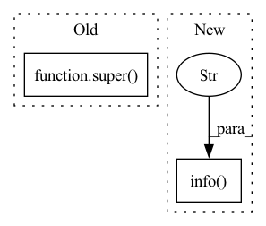

Pattern ID :22510
Before Change
replace_method="auto",
quantization_setting=None):
super( InferenceEngine, self) .__init__()
self.module = model
After Change
self._apply_injection_policy()
device = torch.cuda.current_device()
logger.info(f"Place model to device: {device}" )
self.module.to(device)
if self.mp_world_size > 1:
self.model_orig_fwd = self.module.forwardIn pattern: SUPERPATTERN
Frequency: 4
Non-data size: 2
Instances Fragment ID: 71141416
Project Name: microsoft/deepspeed
Commit Name: f0122007df11281262efcd1525378db54e0261fd
Time: 2021-11-08
Author: chunyang.wen@gmail.com
File Name: deepspeed/inference/engine.py
M Class Name: InferenceEngine
N Class Name: InferenceEngine
M Method Name: __init__(10)
N Method Name: __init__(10)
M Parent Class: Module
N Parent Class: Module
M File Name: deepspeed/inference/engine.py
N File Name: deepspeed/inference/engine.py
M Start Line: 33
M End Line: 73
N Start Line: 45
N End Line: 89
Before Change
class Model(nn.Module):
def __init__(self, cfg="yolov5s.yaml", ch=3, nc=None, anchors=None): // model, input channels, number of classes
super( Model, self) .__init__()
if isinstance(cfg, dict):
self.yaml = cfg // model dict
else: // is *.yaml
After Change
// Init weights, biases
initialize_weights(self)
self.info()
LOGGER.info("" )
def forward(self, x, augment=False, profile=False, visualize=False):
if augment:
Fragment ID: 71141413
Project Name: pooya-mohammadi/deep_utils
Commit Name: 7d442fe6eef7ccd63661e0463e87358ff795d709
Time: 2021-11-26
Author: practical.ai.programming@gmail.com
File Name: deep_utils/vision/object_detection/yolo/v5/torch/models/yolo.py
M Class Name: Model
N Class Name: Model
M Method Name: __init__(5)
N Method Name: __init__(5)
M Parent Class: nn.Module
N Parent Class: nn.Module
M File Name: deep_utils/vision/object_detection/yolo/v5/torch/models/yolo.py
N File Name: deep_utils/vision/object_detection/yolo/v5/torch/models/yolo.py
M Start Line: 68
M End Line: 103
N Start Line: 86
N End Line: 121
Before Change
@classmethod
def from_pretrained(cls, pretrained_model_name_or_path, *model_args, **kwargs):
model = super() .from_pretrained()
model.numericalizer = BartNumericalizer(pretrained_model_name_or_path)
return model, 0 //TODO return best_decascore
After Change
// vocab_sets = kwargs.pop("vocab_sets", None)
full_checkpoint_path = os.path.join(save_directory, model_checkpoint_file)
logger.info(f"Loading the model from {full_checkpoint_path}" )
model = Bart(args=args)
save_dict = torch.load(full_checkpoint_path, map_location=device)
model.load_state_dict(save_dict["model_state_dict"])
Fragment ID: 71141415
Project Name: stanford-oval/genienlp
Commit Name: 446c42622083e0413e9437c8fdd4be61e7bb6b13
Time: 2020-11-07
Author: s.j.semnani@gmail.com
File Name: genienlp/models/general_seq2seq.py
M Class Name: Bart
N Class Name: Bart
M Method Name: from_pretrained(2)
N Method Name: from_pretrained(2)
M Parent Class: nn.Module
N Parent Class: BartForConditionalGeneration
M File Name: genienlp/models/general_seq2seq.py
N File Name: genienlp/models/general_seq2seq.py
M Start Line: 286
M End Line: 288
N Start Line: 286
N End Line: 298
Before Change
return super().activate_clients()
def listen_clients(self):
return super() .listen_clients()
class ConnectServer(ClientCommunicationTopology):After Change
if self._handler.update_flag:
// server_handler will turn this flag to True when model parameters updated
self._LOGGER.info("updated quit listen" )
break
class ConnectServer(ClientCommunicationTopology): Fragment ID: 71141414
Project Name: smilelab-fl/fedlab
Commit Name: 32b1644a007f4632fc195d0550d012bd2288dc4a
Time: 2021-04-03
Author: 928255708@qq.com
File Name: fedlab_core/server/topology.py
M Class Name: ConnectClient
N Class Name: ConnectClient
M Method Name: listen_clients(1)
N Method Name: listen_clients(1)
M Parent Class: EndTop
N Parent Class: EndTop
M File Name: fedlab_core/server/topology.py
N File Name: fedlab_core/server/topology.py
M Start Line: 85
M End Line: 85
N Start Line: 91
N End Line: 105